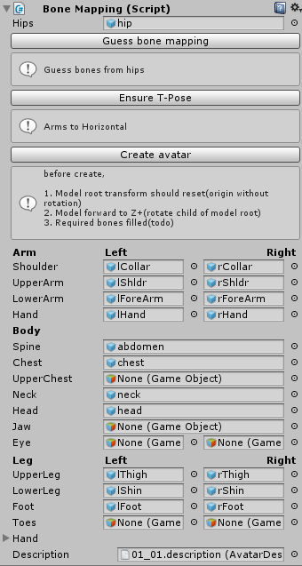

UniHumanoid
Unity humanoid utility with bvh importer.
BVH runtime loader
var context = new BvhImporterContext();
context.Parse(path);
context.Load(); // create Skeleton hierarchy and mesh for visualize
GameObject root = context.Root;
RuntimeLoader
Scenes/RuntimeBvhLoader.unity
RuntimeLoader and PoseTransfer
Load BVH and transfer pose to any model with humanoid avatar.
Scenes/PoseTransfer.unity


Load bvh and create prefab with AnimationClip
Drop bvh file to Assets folder. Then, AssetPostprocessor import bvh file.
create a hierarchy prefab
create a humanoid Avatar
create a legacy mode AnimationClip
create a skinned mesh for preview

Instanciate prefab to scene.

That object can play.
BoneMapping
This script help create human avatar from exist GameObject hierarchy. First, attach this script to root GameObject that has Animator.
Next, setup below.
model position is origin
model look at +z orientation
model root node rotation is Quatenion.identity
Set hips bone.
press Guess bone mapping. If fail to guess bone mapping, you can set bones manually.
Optional, press Ensure T-Pose. Create avatar.

These humanoids imported by UniGLTF and created human avatar by BoneMapping.

Download BVH files
https://sites.google.com/a/cgspeed.com/cgspeed/motion-capture
http://mocapdata.com/
http://www.thetrailerspark.com/download/Mocap/Packed/EYES-JAPAN/BVH/